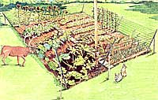
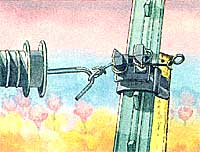
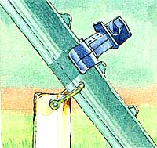
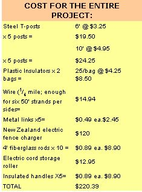

The Best Defense Is A Good...Fence
June/July 1998
Country Skills
Dr. Jack's amazingly easy and effective garden fence.
By Dr. Jack Pedersen
For years, Maggie would suddenly spring up from her snooze and demand to be let outside at once, for unknown dog reasons. When she died at 13 1 / 2 -antique for a Doberman-we were suddenly confronted with a herd of at least six does and a buck or to two that traveled our neighborhood, sampling at will. Besides the beans, beets, and tomato plants, we lost onions, garlic, strawberry plants, and even hot chilies, to blatant deer nibbling. They also ate the fruit trees and blueberry bushes. It became clear the old dog had, in fact been doing her job in keeping such critters away.
I had been searching over the years for the perfect wonder fence, one that would solve the problem of deer and other varmints making oft with the actual fruits of our labor. Every sample design I found had more disadvantages than advantages. The Bureau of Reclamation and the Forestry Service both had a wonderful, nearly indestructible design However, these violated several of my requirements. I wanted to build the most effective fence, at the lowest cost, with the least amount of labor- that wasn't ugly . Based upon my research over the years, and adding a few modifications of my own. I finally managed to come up with a winner It has stood the last three years against the combined efforts of rabbits, deer, dogs and cats, possum, raccoons, wild turkeys, pheasant, and the neighbors' chickens and goats.
Our garden spot is 50' by 50', giving us 2,500 square feet. This spot, along with multiple berry beds and fruit trees, produces enough to last the two of us through a year. We have seen what happens if the garden is left without protection. We have also seen the ugly home-construction fences that blight the countryside year-round. My fence can be taken down in about an hour at the end of the season and stored in a space smaller than a wheelbarrow. It goes up after final tilling in the spring in about an hour or two. If you site your posts properly, they can stay in the ground year round.
Initial cost is around $200 if you have to buy the charger. Often times, used units hide out at yard sales and junk shops. You can reconfigure the shape of the fence, and the replacement cost in materials and labor is minimal. The second year, I spent about $5, and the third year, due to upgraded redesigns, I had to add another roll of galvanized ( not aluminum) wire and some extra insulators, for a total of under $20. You can modify my design to your own configuration, as long as you heed a few basics. Shopping around for the best prices is part of the fun. (See sidebar for a list of supplies and costs.)
The secret of the fence design lies in the incorporation of a fundamental understanding of just how clever deer can be. While deer can jump amazingly high, or amazingly far, they cannot jump both far and high at the same time. While my fence is only about 6 1 / 2 tall, the angle of the support posts make it effectively much higher, as the offset width between top and bottom strand is about 3'. When they are close to the lower wire, the top wire is directly overhead and they cannot clear the top wire. When they are in position to jump the top wire, they are too far away to clear the bottom on the inside. They will not jump blindly. I found I could fake them out if I extended a white fiberglass rod about 2' above the middle, between the corner posts. They seemed to consider the height increased by that amount. One of the secrets is to make it appear that your fence is more of a barrier than it actually is.
Without the electrical charger, this design a doomed to failure sooner or later. Without the necessary visual guides, eventually some buck will knock a wire or two down and happily graze on your goodies. The proper "post-set" is a vertical short post and an angled long post. These have to be connected together to stabilize each other. The 6' post is driven to 4'; the 10' is inserted about 3' toward the opposite corner post, then driven in at a 45° angle. There is about 3' angling out above the vertical post.
I drove the 6' posts in with a regular post driver in the comers of a 50' by 50' square. The 10' posts are angled at 45°, and have a hole drilled so the posts can be bottled together. You can square your garden spot by making the four sides equal, then make the diagonals equal to each other. Actually, I missed this part, so I have an irregular polygon, but the fence is so adaptable it didn't matter. I have seen this same basic design keep out cows and even elk. That fence was 100' by 30' using only four more post-sets.
I used a common metal squeeze-link to stabilize the post-pairs. Place your bottom insulators about the height of a possum's back, or whatever your smallest invaders may be, and stretch each section of this first line around the insulators as you unroll the wire around the periphery. Measure up about 12" for each of the remaining wires. You can construct a more elaborate gate, but I used just the insulated handles for attachment to the special insulator with the wire connector built in. Connect the hot wire from the charger in parallel to each fence wire. Ground your charger well. I mounted mine on a post and used an old plastic washbasin screwed to the post with drywall screws to protect against rain. The following year, I bought a translucent plastic container so I could see the charger (lash, and I used the lid as a small porch roof to keep the water out of the upper edge. Now, as we pull our garden produce from the freezer all winter, we take special pride in the knowledge that we are more clever than deer.
|
 ILLUSTRATIONS: BELLA HOLINGWORTH |
 Insulated handle gate-attachment. |
 Wire and clip. |
|
 Post-set linkage |
 |
|